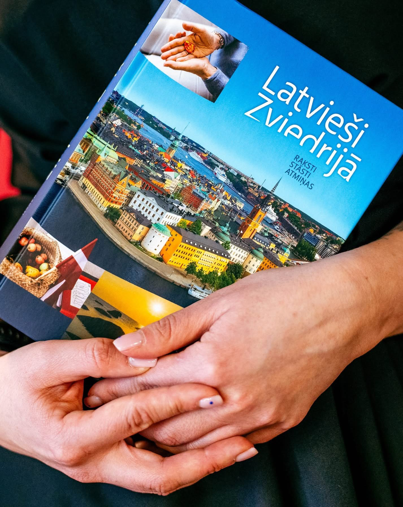

Gunta Eneroth (Enerūta)
Žurnāliste un skolotāja. Zviedrijas Žurnālistu asociācijas biedre, Latvijas Avīzes un Latviesi.com korespondente.
RaDi Latvieši apkopo Zviedrijas latviešu diasporas dzīvesstāstus un pieredzi. Ar intervijām, filmām un sarunām mēs saglabājam šīs pieredzes.

Kopš 2019. gada dokumentējam Zviedrijas latviešu diasporas dzīvi, kultūru un radošo garu.
Mūsu darbs savieno vēsturiskās liecības ar mūsdienu radošajām kopienām. Katra saruna kļūst par daļu no dzīva arhīva.RaDi Latvieši darbība ietver raidījumu ciklu ”Latvietis sirdī”, videoprojektus ”Latvieši Stokholmā” un ”Glābšanās rītausmā”, radošo latviešu stāstus ”Ziemassvētku kalendāri” un izveidoto krājumu – grāmatu ”Latvieši Zviedrijā”. Krājumā iekļauti zinātniski pētījumi un personiskas liecības par Zviedrijas latviešu organizācijām, radošajām kopām, trimdas literatūru un sabiedriskajām iniciatīvām.
RaDi Latvieši ir piemērs jaunai kultūras saglabāšanas formai, jo kultūras saglabāšana diasporā mūsdienās ir ne tikai koris, deja vai teātris, bet arī stāstu dokumentēšana, filmas un digitālais saturs.
Filmas, sarunas un raidījumi no mūsu arhīva
Dibinātāja un redaktore
Žurnāliste un skolotāja. Zviedrijas Žurnālistu asociācijas biedre, Latvijas Avīzes un Latviesi.com korespondente.
Mēs labprāt Tevi uzklausīsim! Dalies ar atmiņām, pastāsti par savu radošo brīvā laika interesi, iesaki radošus cilvēkus! Sazinies ar mums par sadarbību:
Radi.latviesi@gmail.com